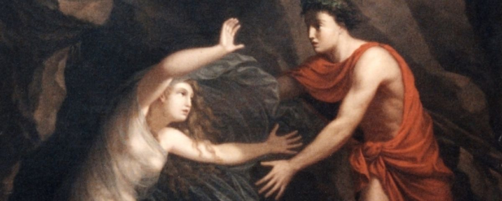

④ Dual coding
WD2_03.03.01 – situeren in tijd & ruimte

It's Over Too Soon
naar Vergilius, Georgica IV, 494–503 · het laatste woord van Eurydice
① Voorkennis activeren
WD2_03.03.01 – situeren in tijd & ruimte
Context
Mythologische achtergrond
Nadat Eurydice door een slangenbeet stierf, daalde haar man Orpheus af naar de onderwereld. Met zijn muziek bewoog hij Hades en Persephone zo diep dat ze Eurydice vrijlieten — op één voorwaarde: hij mocht niet omkijken voor ze het daglicht bereikten. Net voor de uitgang draaide Orpheus zich om. Eurydice wordt voor de tweede keer weggesleurd. Dit fragment uit Vergilius' Georgica (ca. 29 v.Chr.) geeft haar het laatste woord: een afscheid vol verwijt, pijn en berusting.
④ Dual coding
WD2_03.03.01 – situeren in tijd & ruimte
⑥ Check begrip hele klas
⑦ Scaffolding
WD2_03.02.01 – tekst begrijpen
WD2_03.02.02 – betekenis geven
⑦ Scaffolding → zelfstandig
WD2_03.02.01.02 – talige hulpmiddelen
⑤ Actieve verwerking
⑦ Scaffolding
WD2_03.02.01.01 – lectuurmethode toepassen
WD2_03.02.01 – tekst begrijpen
Lectuuranalyse — vraag bij dit vers
③ Voorbeelden & modelling
⑤ Actieve verwerking
WD2_03.02.01.01 – lectuurmethode toepassen
WD2_03.01.01 – taalsystematiek
v. 494
Illa:
"Quis
et me
miseram
et te
perdidit,
Orpheu,
v. 495
quis tantus furor?
v. 495–496
En
iterum
crudelia
retro
v. 496
Fata vocant,
conditque
natantia lumina
somnus.
v. 497
Iamque vale:
feror
ingenti circumdata nocte
v. 498
invalidasque tibi tendens,
heu !
non tua,
palmas."
v. 499
Dixit
et ex oculis
subito,
ceu fumus in auras
v. 500
commixtus tenues,
fugit diversa:
neque illum,
v. 501
prensantem nequiquam umbras
et multa volentem dicere,
v. 502
praeterea vidit,
nec portitor Orci
v. 503
amplius obiectam passus transire paludem.
494Illa: "Quis et me miseram et te perdidit, Orpheu,
495quis tantus furor? En iterum crudelia retro
496Fata vocant, conditque natantia lumina somnus.
497Iamque vale: feror ingenti circumdata nocte
498invalidasque tibi tendens, heu ! non tua, palmas."
499Dixit et ex oculis subito, ceu fumus in auras
500commixtus tenues, fugit diversa: neque illum,
501prensantem nequiquam umbras et multa volentem
502dicere, praeterea vidit, nec portitor Orci
503amplius obiectam passus transire paludem.
⑦ Scaffolding
⑪ Feedback die denken aanzet
WD2_03.01.01 – taalsystematiek
Grammaticale noten
1Quis et me miseram et te perdidit — dubbele et … et-constructie: Eurydice heft zichzelf en Orpheus op gelijk niveau. Miseram als praedicatief attribuut bij me: het bijvoeglijk naamwoord staat ver van zijn nomen (hyperbaton).
2quis tantus furor — retorische vraagzin zonder PV: furor staat gepersonifieerd als subject. Krachtig kort na de aanroeping — het verwijt is emotioneel ingehouden.
3crudelia retro / Fata vocant — enjambement over versgrens 495–496: het lot "roept" op het begin van vers 496, als een echo van een bevel. Retro als bwb van richting: terug naar de dood.
4natantia lumina — participium praesens van natare (drijven, zwemmen) als attribuut bij lumina (ogen). Poëtisch beeld voor ogen die wegzakken in de dood.
5feror ingenti circumdata nocte — passief van ferre: Eurydice wordt gedragen, ze is al geen subject meer. Circumdata (PPP van circumdare) als praedicatief attribuut: ze is omgeven, ingesloten door de nacht.
6invalidasque tibi tendens … palmas — hyperbaton: invalidas … palmas omsluit het gevoelsvolle tibi tendens, heu! non tua. De handen strekken zich nog uit maar zijn al niet meer van Orpheus.
7ceu fumus in auras commixtus tenues, fugit diversa — similis (vergelijking): Eurydice verdwijnt als rook die oplost. Diversa als bijwoord: in tegengestelde richting — ze keert terug naar de dood.
8nec portitor Orci / amplius obiectam passus transire paludem — pati is een deponens; passus (est) = hij liet toe. Transire paludem als ACI afhankelijk van passus. Obiectam (PPP van obicere): de slagboom is letterlijk opgeworpen.
① Voorkennis activeren
⑧ Gespreide oefening
WD2_03.01.01 – basisvocabularium
WD2_03.02.02 – betekenis geven aan teksten
Tekst 3 · Thema 3 · 4de jaar
Woordenlijst
Woordenlijst op volgorde van voorkomen. basis = basiswoordenschat.